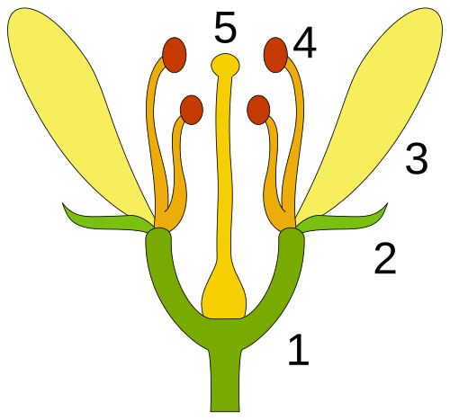
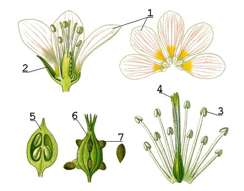

- l’Ain (01) ;
- les Alpes-de-Haute-Provence (04) ;
- les Hautes-Alpes (05) ;
- la Drôme (26) ;
- l’Isère (38) ;
- la Savoie (73) ;
- la Haute-Savoie (74).
Définition
En biologie, chez les « plantes à fleurs » (angiospermes), la fleur
constitue l'organe de la reproduction sexuée et l'ensemble des «
enveloppes » qui l'entourent. Après la pollinisation, la fleur est
fécondée et se transforme en fruit contenant les graines (ou parfois
en fruits sans graines). Les fleurs peuvent être solitaires, mais
elles sont le plus souvent regroupées en inflorescences.
Très tôt, les fleurs ont attiré l’attention des humains, qui les
utilisent et les cultivent pour la parure (couronne de fleurs), pour
l’ornementation intérieure (fleurs coupées, bouquets, ikebana) et
extérieure (jardins, plates-bandes, etc.). Elles sont utilisées en
parfumerie, pour leurs fragrances, ainsi qu'en teinture, pour leurs
pigments. Les fleurs comestibles servent à la préparation de boissons
et de mets. Les fleurs ont souvent inspiré les artistes, peintres,
poètes, sculpteurs et décorateurs. Les fleurs ont eu une place et une
signification variables dans la culture et l'art selon les
civilisations ; rejetées ou négligées à certaines époques, comme dans
les premiers siècles chrétiens, elles sont très valorisées à
d'autres[1].
La culture des fleurs est la floriculture, une branche de
l'horticulture.
Structure
La plupart des fleurs sont hermaphrodites, c'est-à-dire qu'elles ont
à la fois des organes reproducteurs mâles et femelles : elles ont un
pistil et des étamines. Les étamines sont la partie mâle (qui libère
du pollen), et le pistil la partie femelle (qui contient les
ovules). Certaines plantes comme le pistachier ou le kiwi ont des
fleurs qui ne sont pas hermaphrodites : elles sont soit mâles, soit
femelles, les scientifiques parlent de fleurs gonochoriques.
D'autres plantes comme l'avocatier ont des fleurs qui sont
successivement mâles et femelles, on parle alors d'hermaphrodisme
successif.
La fleur hermaphrodite est constituée de pièces florales insérées
sur un réceptacle floral. Lorsque la fleur est complète, elle
comprend quatre verticilles de pièces florales. De l'extérieur vers
l'intérieur, on rencontre :
- le calice, formé par l'ensemble des sépales ;
- la corolle, formée par l'ensemble des pétales ;
- l'androcée, c'est-à-dire l'ensemble des étamines (partie mâle), qui produit le pollen ;
- le gynécée ou pistil, formé par l'ensemble des carpelles (partie femelle).
Calice et corolle forment le périanthe, enveloppe stérile, qui joue
un rôle protecteur pour les pièces fertiles, et attractif pour les
animaux pollinisateurs.
Ce plan théorique de la fleur, que l'on trouve typiquement chez le
bouton d'or (Renonculacées), est sujet à de nombreuses variations.
On rencontre par exemple des fleurs sans pétales, dites « apétales
». Une fleur mixte est une fleur qui possède à la fois étamines et
pistil.

1. Réceptacle floral ; 2. Sépale ; 3. Pétale ; 4. Étamine ; 5.Pistil ou gynécée.

1. Pétale ; 2. Sépale ; 3. Anthère ; 4. stigmate ; 5. Ovaire ; 6.Fruit ; 7. Graine.
Source : https://fr.wikipedia.org/wiki/Fleur
Fleurs des Alpes
Enneigée l’hiver et fleurie l’été… voici l’image que l’on retient de la montagne en général et des Alpes en particulier. C’est de ce territoire à l’impressionnante diversité floristique et d’habitats naturels que le Conservatoire botanique national alpin est l’expert !
Le Conservatoire Botanique National Alpin
Le travail du Conservatoire Botanique National Alpin est reconnu en
matière de flore et d’habitats naturels. Sur le territoire alpin
l’équipe met en œuvre la stratégie définie par le Comité syndical et
les méthodes validées par le Conseil scientifique. Au niveau national
le travail du CBNA rejoint celui des autres Conservatoires botaniques
nationaux et participe aux projets collectifs animés par leur
Fédération.
Pour en savoir plus :
https://cbn-alpin.fr/presentation/organisation
Source : https://cbn-alpin.fr/
Fleurs Tropicales des antilles françaises
Les fleurs exotiques qui s'épanouissent sur les îles tropicales.
Un concentré de couleurs, d'odeurs et de formes pour caractériser les
principales fleurs exotiques que l'on croise un jour ou l'autre lors
de nos voyages sous les tropiques. Bien sûr, il existe une multitude
d'autres fleurs tropicales, mais vous trouverez les incontournables
fleurs des Antilles et d'Asie, ces beautés qui ne poussent pas en
France et qui nous rappellent la chaleur et taux d'humidité de leur
écosystèmes naturels.Meilleurs séjours organisés.
Madinina - l'île aux fleurs
La Martinique regorge de nombreuses espèces florales. Les indiens
Caraïbes appelaient l'île "Madinina", traduit litéralement par "l'île
aux fleurs". Ces espèces sont le plus souvent utilisées à des fins
ornementales. En accostant l'île le 15 Juin 1502, Christophe Colomb
aurait déclaré « C'est la plus belle chose que j'ai jamais vue, aussi
ne puis-je fatiguer mes yeux à contempler une telle verdure ». Encore
aujourd'hui, l'île a préservé son environnement naturel et ses fleurs
en particulier que vous retrouverez du nord au sud de l'île. Juste un
mot « contemplez » !
Pour les découvrir les principales, je vous invite à visiter le site
de
https://www.martinique-tour.com/decouvrir-la-martinique/faune-et-flore-une-biodiversite-remarquable/les-fleurs-tropicales/